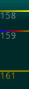

Linux required, 64-bit Ubuntu recommended.
cd ~/ && wget -qO- qira.me/dl | unxz | tar x && cd qira && ./install.shYour breakpoint was hit 5 times, at change 90, 111, 128, 145, and 162. I drew red lines in the vtimeline for you to signify this. Would you like to see the memory at those times? Just click. Or navigate between them with j and k
|  |
Reads are dark yellow.
|